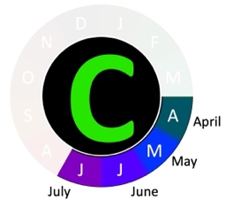

Help and FAQ
How do I use this?
Answer the first question, and then observe your plant more closely. Match your plant's flower and petal arrangement to the nearest image. This will give you a list of possible matches for your plant.
What does the flowering time indicate? How can I use its?
The flowering time period is shown in the form of a ring surround the rarity symbol. An example is shown below of a flowering period of April to July. The months of the year follow the numbers on a clock face, i.e. January is 12-1, February 1-2, etc. The months when a species is normally in flower are shown, the rest made extremely faint.

It should be noted that flowering times are a guide rather than an absolute rule, and occasional individuals may be found flowering outside of a normal period for a species. For commoner species at least, flowering periods may be viewed as when most individuals are likely to be in flower. However, flowering periods may also happen earlier or later in any given year due to weather conditions (e.g. a hot or cold spring will bring flowering times forward or backward, respectively).
There are too many plates; Is there some way to sort through them?
You can use the leaf morphology table, flowering time, or location to exclude some of your plates.
I found an error, mistake, or bug!
This is a new resource, built by one very busy University lecturer and a second year student. As such, despite all our best efforts, there are bound to be occasional errors or omissions. If you spot one, please contact us!
Likewise, if you have suggestions for improvements, other feedback, or just want to tell us if it worked for you, please do get in touch at r.milne@ed.ac.uk
WHat species does this cover?
At the time of writing, this resource includes images of almost all native flowering plant species present in Britain, and a high proportion of alien taxa. Some native species that closely resemble another, commoner species are not included.
Where are the photos from, and are there any yet to be added?
Almost all photos are by Dr Milne, the exceptions being one (Plymouth Pear) by his parents Jane and Andrew, and a handful of copyright-free images taken from Wikimedia and very old picture books that are out of copyright. The plan is to gradually replace these with photos over the next few years. In addition, he am well behind on grasses, and incomplete plates for these will be added in autumn or early next year, along with ferns and conifers.
Why aren't all British alien species included in this guide?
Although only two thirds of the alien species recorded from Britain are shown here, these include almost all of the more common ones. In fact the bulk of alien species recorded from Britain are extremely rare here, many having been seen only a very few times and often only persisting for a year or two. Famous thugs like the Japanese Knotweed, Giant Hogweed and Rhododendron ponticum are the exception, not the rule! Most aliens are not invasive, and many die out very quickly. This means that you are highly unlikely to encounter an alien not shown here but if you do, please report it to the BSBI as it might be a rare and interesting introduction.